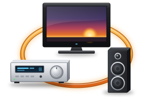
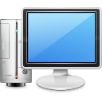

Every button, your way
Choose what each button does in every activity, down to the last one on the remote, and which device it controls.
See how it works ›
One touch, everything on
“Watch a Movie” turns on the projector, receiver and player in the right order, switches each to the right input, and sends every button where it belongs.
How activities work ›
Bring your setup along
Import the backup you read from your remote and your devices and activities are back, ready to change. Codes can also be learned off the original remotes.
How importing works ›Remotes


Latest release: 0.2.0 · 10 October 2026
- Harmony 900 setups no longer freeze the remote, and every button can be set.
- Works with your remote on today's Windows and Linux computers, without Logitech's old software.
- The Harmony 1100 can be tried safely: Afterglow saves what's on it first.
- A Mac app, and projects you can send to a friend.
Talk to us
Questions, test reports and configuration dumps all help. The Discord is where new remotes get tested before they're released.